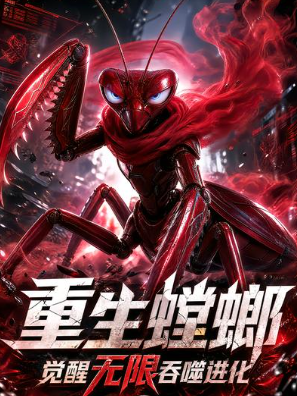

故事概况： 点击阅读原文
史克螂意外重生，变成了蛮荒丛林中一只弱小的螳螂。在这个弱肉强食的世界里，四周遍布毒虫与凶兽，稍有不慎，他就会成为其他生物的食物。
危急之中，史克螂觉醒了“无限吞噬进化”的天赋：通过吞噬其他生物，获取它们的基因与能力，让自己的身体不断蜕变。这让原本只能挣扎求生的他，拥有了改变命运的机会。
为了活下去，他不断捕猎、战斗，挑战更强大的敌人，并在一次次生死危机中完成进化。从食物链底层的小虫，到令强敌畏惧的猎手，再一步步走向虫族至尊，故事讲述了一只弱小螳螂依靠特殊天赋与求生意志，不断突破自身极限的逆袭历程。